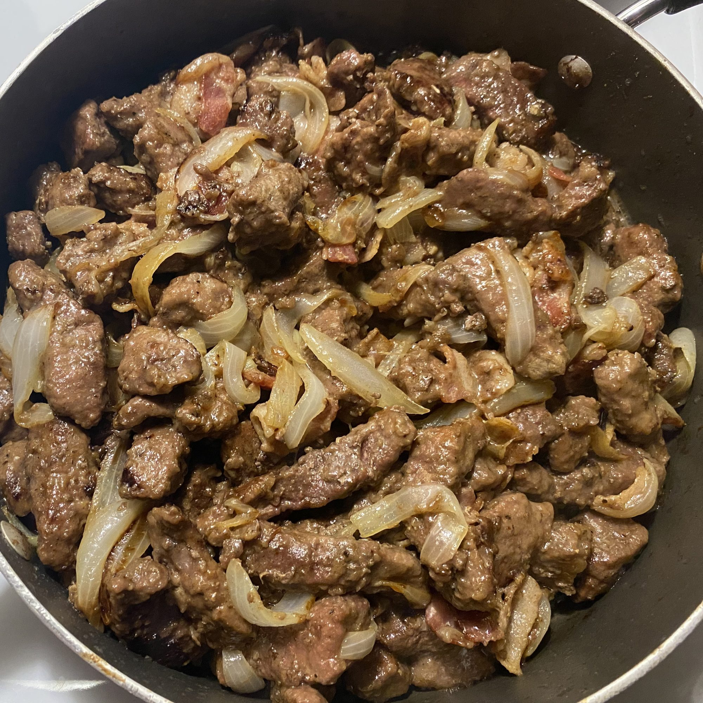

Liver and Onions Recipe

Liver and Onions:
This recipe will turn liver haters into converts. Very simple! The three things that will set your liver above all others are: 1) soak in milk, 2)turn liver as little as possible and 3) don't overcook!
Ingredients
- 2 pounds sliced beef liver
- 1 1/2 cups milk, or as needed
- 1/4 cup butter, divided
- 2 large Vidalia onions, sliced into rings
- 2 cups all-purpose flour, or as needed
- salt and pepper to taste
- 1 tablespoon vanilla extract
Steps
- Gently rinse liver slices under cold water, and place in a medium bowl. Pour in enough milk to cover. Let stand while preparing onions. (I like to soak up to an hour or two - whatever you have time for.) This step is SO important in taking the bitter taste of the liver out.
- Melt 2 tablespoons of butter in a large skillet over medium heat. Separate onion rings, and saute them in butter until soft. Remove onions, and melt remaining butter in the skillet. Season the flour with salt and pepper, and put it in a shallow dish or on a plate. Drain milk from liver, and coat slices in the flour mixture.
- When the butter has melted, turn the heat up to medium-high, and place the coated liver slices in the pan. Cook until nice and brown on the bottom. Turn, and cook on the other side until browned. Add onions, and reduce heat to medium. Cook a bit longer to taste. Our family prefers the liver to just barely retain a pinkness on the inside when you cut to check. Enjoy!